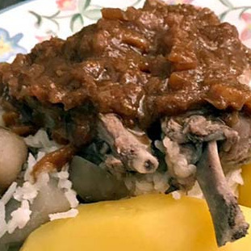

Thimpu Boliviano

Ingredientes
- 1 kg de cordero
- 2 papas medianas
- 1/2 taza de arroz
- 1 cucharada de ají colorado
- Ajo, cebolla, comino, sal
- Hierbas como huacataya o quilquiña
Preparación
El thimpu boliviano es un plato tradicional que se prepara con carne de cordero. Comienza cortando la carne en porciones medianas y colócala en una olla grande con agua suficiente para cubrirla. Agrega sal, comino, pimienta, ajo machacado y una ramita de hierbabuena. Cocina a fuego medio durante aproximadamente dos horas, hasta que la carne esté tierna. Aparte, cocina papas peladas y arroz hasta que estén cocidos. Sirve el thimpu en platos hondos, colocando una porción de carne, papas y arroz, y bañando con el caldo caliente. Decora con hierbas frescas como huacataya o quilquiña al gusto.